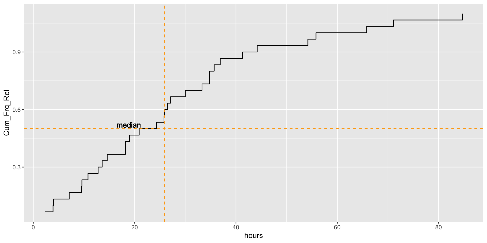
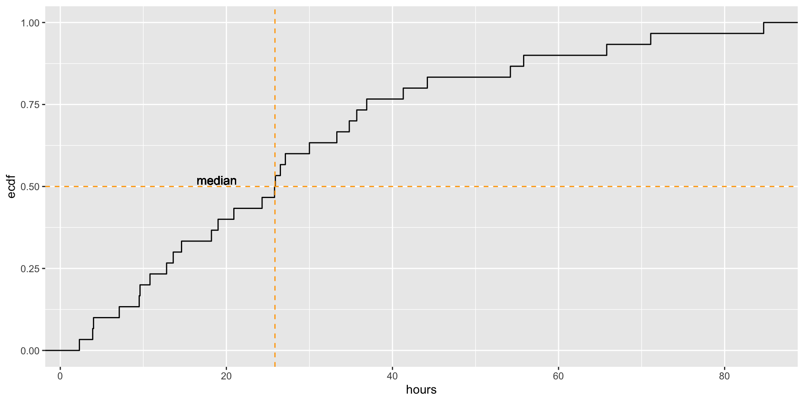

Min. 1st Qu. Median Mean 3rd Qu. Max.
2.30 12.80 25.80 27.85 35.70 84.70 Lifespan of bees (in hours).
Min. 1st Qu. Median Mean 3rd Qu. Max.
2.30 12.80 25.80 27.85 35.70 84.70 summary() gives you three percentiles: 25, 50, and 75%.quantile() gives you \(n\)-quantiles 10% 20% 30% 40% 50% 60% 70% 80% 90% 100%
4.62 10.08 14.20 18.84 25.80 27.68 34.80 39.54 55.48 84.70 All the quantiles of a numerical variable can be displayed by graphing the cumulative frequency distribution.
To get the cumulative sum of the vector bees$hours:
Absolute:
# A tibble: 3 × 2
hours n
<dbl> <int>
1 2.3 2
2 3.9 1
3 4 1| hours | n | Cum_Frq_Abs | Cum_Frq_Rel |
|---|---|---|---|
| 2.3 | 2 | 2 | 0.06666667 |
| 3.9 | 1 | 3 | 0.10000000 |
| 4.0 | 1 | 4 | 0.13333333 |
| 7.1 | 1 | 5 | 0.16666667 |
| 9.5 | 1 | 6 | 0.20000000 |
| 9.6 | 1 | 7 | 0.23333333 |
“Manually:”

ggplot2:
library(ggplot2)
#set_theme(bb_theme()) #yes, I made my own, but you don't have to
#summary(bees$hours) #median 25.8
ggplot(bees, aes(x = hours))+
stat_ecdf(geom = "step") +
geom_vline(aes(xintercept=median(hours)), lty=2, col="orange")+
geom_text(aes(x = median(hours)-7), y=0.52, label="median")+
geom_hline(aes(yintercept=0.5), lty=2, col="orange")